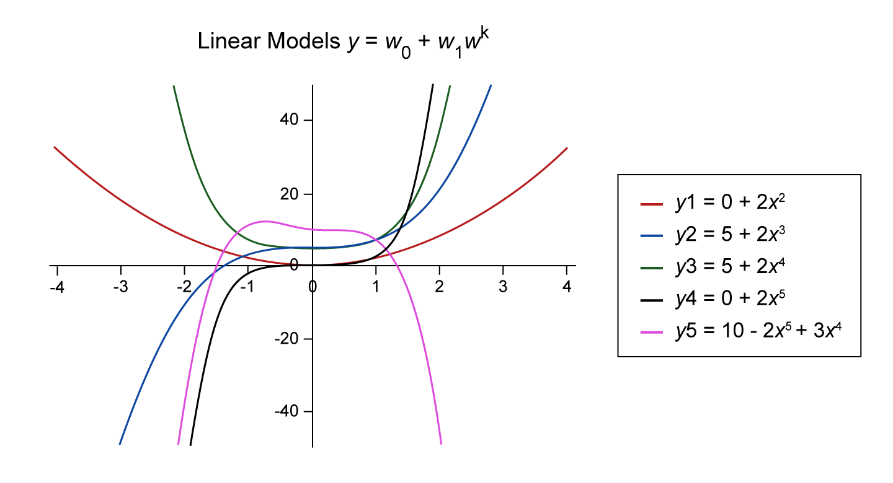
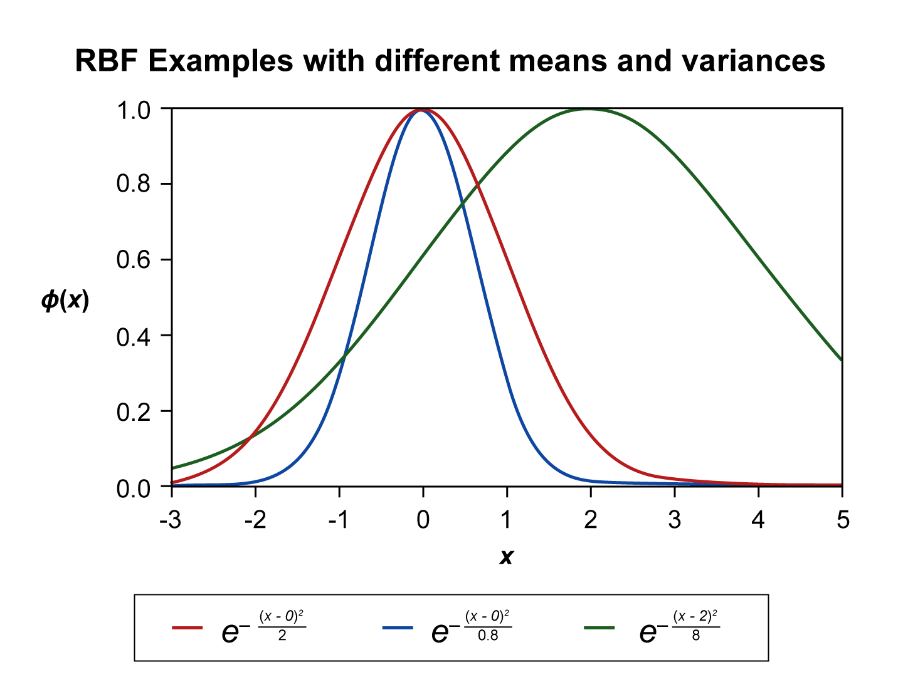
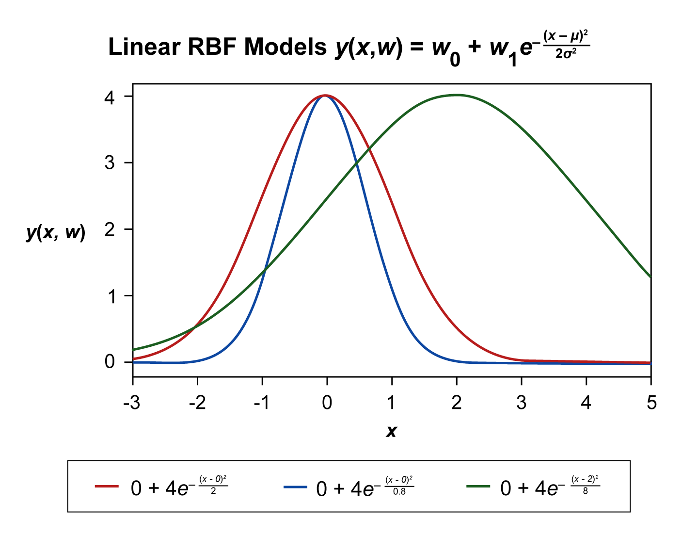
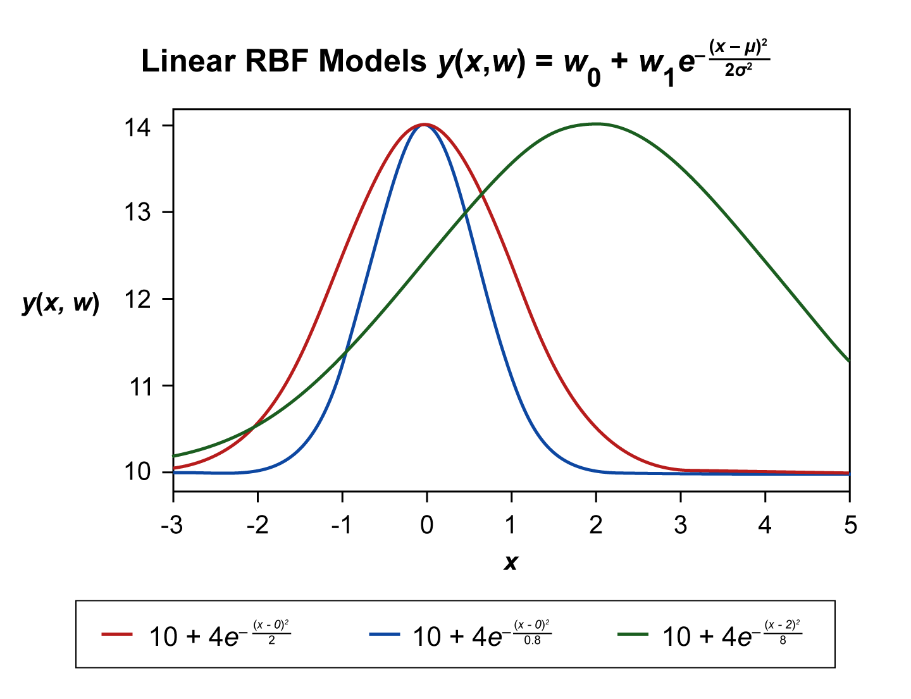
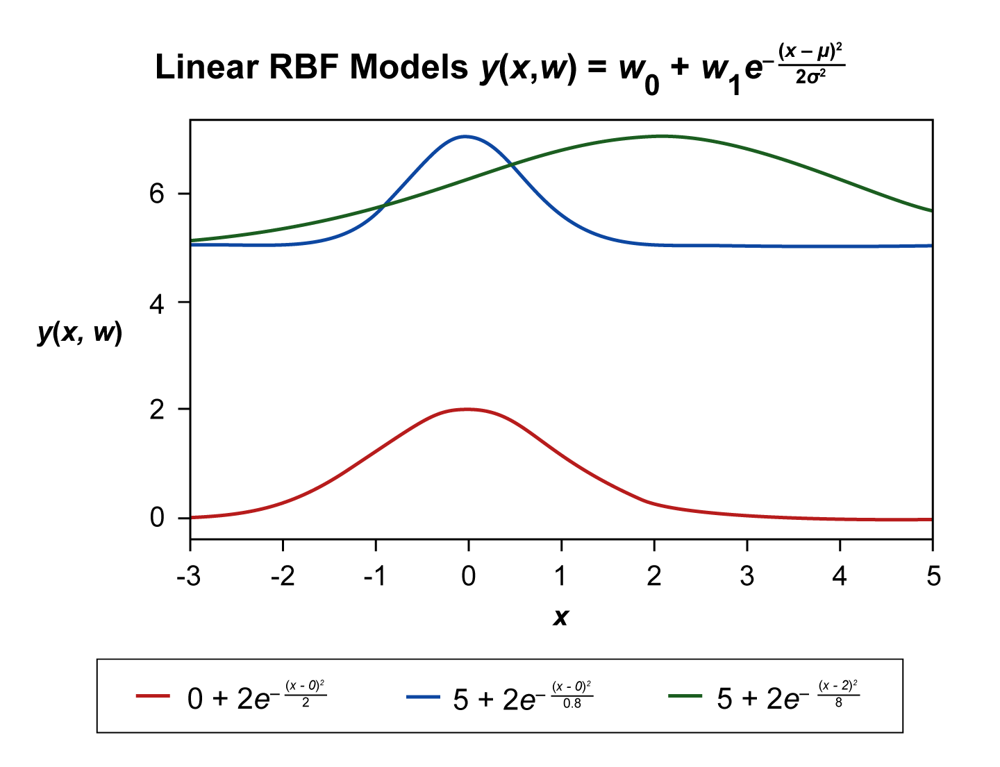
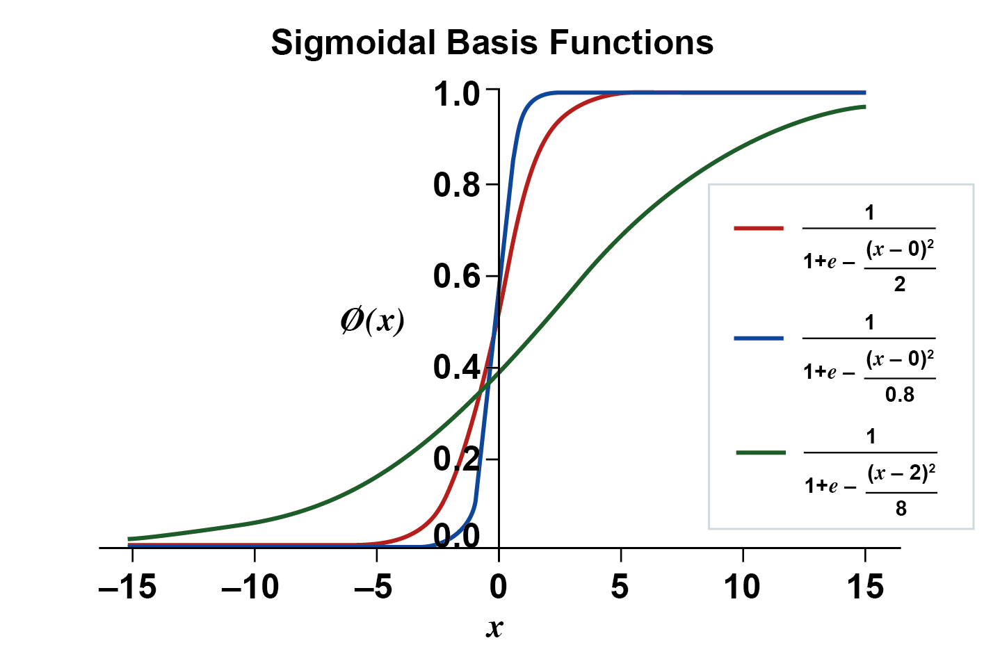
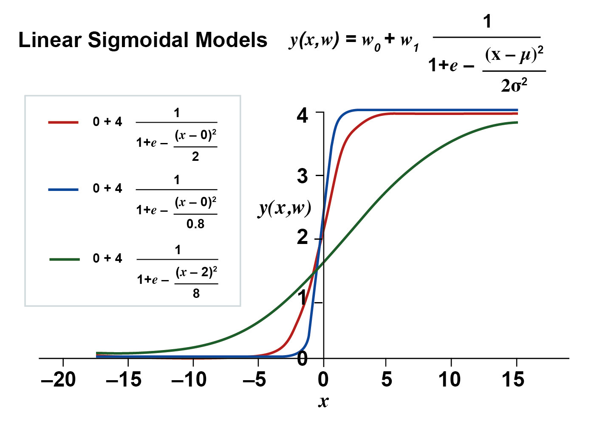
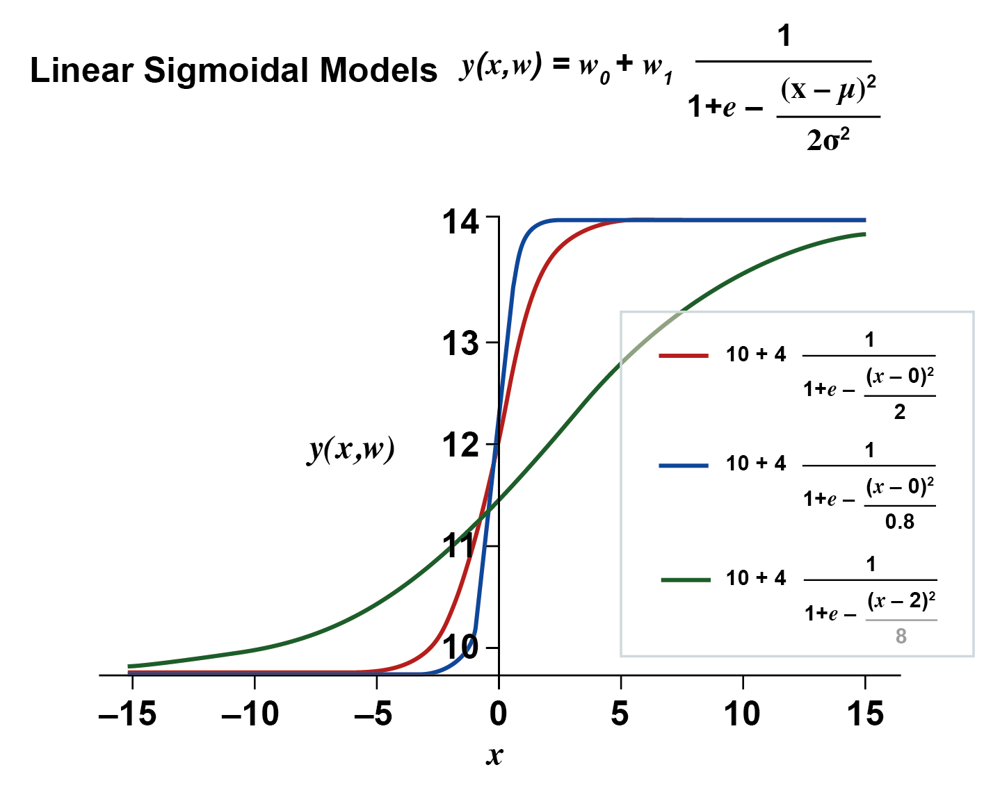
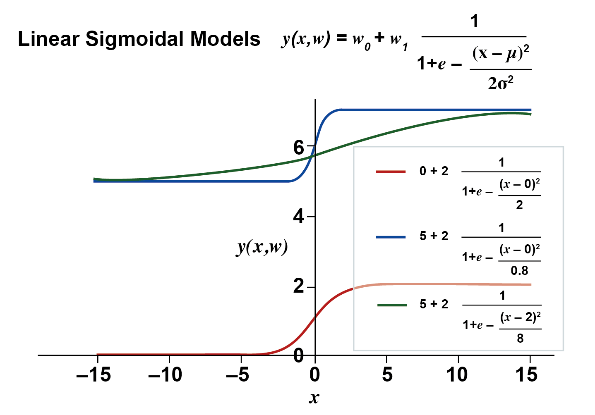

Basis functions
Polynomial basis functions
As we said earlier, we can use any basis function in our linear model as long as the weights are all linear. If the basis function is polynomial our linear model can take lots of different forms.
For example: \(y(\mathbf{x}, \mathbf{w})=w_{0}+w_{1} x_{1}^{2}+w_{2} x_{2}^{2}+\cdots+w_{D} x_{D}^{2}\) is a linear model with quadratic basis. While \(y(\mathbf{x}, \mathbf{w})=w_{0}+w_{1} x_{1}^{3}+w_{2} x_{1}^{5}\) is linear model with polynomial of power \(5\) of \(x_1\). Our first simple linear models \(y(\mathbf{x}, \mathbf{w})=w_{0}+w_{1} x_{1}+w_{2} x_{2}+\cdots+w_{D} x_{D}\) become a special case of this form with polynomial of degree \(1\) since it can be written as \(y(\mathbf{x}, \mathbf{w})=w_{0}+w_{1} x_{1}^{1}+w_{2} x_{2}^{1}+\cdots+w_{D} x_{D}^{1}=w_{0}+w_{1} x_{1}+w_{2} x_{2}+\cdots+w_{D} x_{D}\).
The main advantage of using such basis is its ability to represent the more complex shaped relationship between the input and the output. Sometimes this is exactly what we want, see Figure 4.8.

Although these are more capable of capturing more nonlinear function shape (remember our model is still linear in the weights) nevertheless such basis have limitations. The most important limitation of polynomial basis is that they are global functions. Meaning that changes in one part infiltrate to affect other parts. Note that even polynomial has similar shapes that span the first and second quarters of the real plane (y is positive) and odd polynomial have similar shapes that span the first and third quarter of the real plane (y is can be positive and negative).
Gaussian basis functions aka radial basis functions
Another important basis that we will utilise is the Gaussian basis functions also known as radial basis functions (RBF). As you know, Gaussian distribution is also known as the normal distribution. This basis is inspired by the Gaussian but it is not exactly the same, more on that in a moment. This basis takes the following form:
Where \(\mu_{j}\) specifies the centre of the basis and \(\sigma\) specifies the spread of the basis. Note that this is not the full Gaussian distribution function, the normalisation factor \(\frac{1}{\sqrt{2 \pi \sigma^{2}}}\) is missing, so it does not necessarily have a probabilistic meaning because the basis is going to be scaled by a weight anyway inside the model. As a reminder, a univariate Gaussian probability density denoted as \(\mathcal{N}\left(x \mid \mu, \sigma^{2}\right)\) with mean \(\mu_{j}\) and variance \(\sigma^{2}\) is given as:
Note however, that the max value that the RBF basis can take is 1, contrary to the Gaussian distribution which has its sum over all x’s is 1. See Figures 4.9-4.12.




We can see from Figures 4.9-4.12 that the effect of weights is as follows: the bias \(w_0\) shifts the entire model up or down while the \(w_1\) scale the entire model to a range of \([0,w_1]\). The effect of the mean and the variance is as usual; the mean specifies where the model peaks and the variance specifies how narrow or wide the model.
Multidimensional input space we use multivariate radial basis functions takes the form:
Where \(\boldsymbol{\mu}_{\boldsymbol{j}}\) has the dimension \(D\) of the input space however, note that the number of those basis \(M-1\) (it is \(M\) if including the dummy features) specifies the size of the feature space which would be the input for the linear model. \(\boldsymbol{\Sigma}^{-1}\) is the inverse of the covariance matrix. The covariance matrix \(\boldsymbol{\Sigma}\) is an \((M-1)×(M-1)\) squared, symmetrical, positive and semi-definite matrix.
The above define a set of multinomial Gaussians (without a normalisation factor), each is defined by a different means \(\boldsymbol{\mu}_{\boldsymbol{j}}\) vectors and all share the same covariance matrix Σ. The means \(\boldsymbol{\mu}_{\boldsymbol{j}}\) need to be specified sensibly, however this is not trivial. Sometimes, we can do that by exploiting some domain knowledge and a crude analysis of the data (see the next notebook). We will see more proper and better ways of specifying those centres in the Machine Learning (ML) module. One way is to cluster the data and choose the centroids of the clusters. As we saw earlier in unit 3, clustering provides a good insight into the nature of the dataset and can be utilised here to decide on the radial basis centres. This might still need tuning and sometimes it is not straight forward to know which distance metric to use for the clustering process. Another way is via Gaussian processes. The topic of how we fit a Gaussian or in a parametric or nonparametric model is an important and significant one in machine learning, and will be left for the abovementioned ML module. Note also that we assumed that the covariance matrix is the same for all the basis but this need not be the case. We can allow each feature to take on a different Gaussian basis with its own different covariance matrix.
Note
Note that on the diagonal of \(\boldsymbol{\Sigma}\) in the usual Gaussian distribution we have \(i=j\), \(\operatorname{cov}\left(x_{i}^{2}\right)=E\left[\left(x_{i}-\mu_{i}\right)^{2}\right]=\sigma_{i}^{2}\), where \(\sigma_{i}\) is the variance of \(x_i\).
Note that \(\left|\operatorname{cov}\left(x_{i} x_{j}\right)\right| \leq\left|\sigma_{i} \sigma_{j}\right|\) in fact \(\operatorname{cov}\left(x_{i} x_{j}\right)=\frac{1}{2} \operatorname{var}\left(x_{i}+x_{j}\right)-\sigma_{i}+\sigma_{j}\). Note also that although the covariance can be calculated in the following two equivalent ways, we prefer the first because the second is computationally susceptible to an issue called catastrophic cancellation:
\(\operatorname{cov}\left(x_{i} x_{j}\right)=E\left[\left(x_{i}-\mu_{i}\right)\left(x_{j}-\mu_{j}\right)\right]\)
\(\operatorname{cov}\left(x_{i} x_{j}\right)=E\left(x_{i} x_{j}\right)-\mu_{i} \mu_{j}\)
Note that the normal distribution maps a vector x to a real number since \(\underbrace{(\underbrace{\mathbf{x}-\boldsymbol{\mu})}_{\text {vector }}^{\top} \underbrace{\boldsymbol{\Sigma}(\mathbf{x}-\boldsymbol{\mu})}_{\text {vector }})}_{\text {scalar }}\) i.e. \(\mathcal{N}: \mathbb{R}^{\mathrm{M}} \longmapsto \mathbb{R}\).
Sigmoidal basis functions
Another exponential basis is the sigmoidal basis. This type of basis function takes the form:
If we take the derivative of the sigmoid we get (you can have a look at the Sigmoid Derivative box below for details).
Often we define: \(\alpha_{j}=\frac{1}{\sigma}\left(x-\mu_{j}\right)\) where \(\mu_{j}\) specifies the centre of the basis and σ specifies the spread of the basis:
Note that the term \(\alpha_{j}=\frac{\left(x-\mu_{j}\right)}{\sigma}\) appears without squaring (and the \(\frac{1}{2}\)) in contrast to the RBF basis which takes the form \(e^{-\frac{1}{2 \sigma^{2}}\left(x-\mu_{j}\right)^{2}}\).
Below we show some examples of the behaviour of the sigmoid for 1d input space.




Sigmoid Derivative
The sigmoid can be written as \(g(\alpha)=\frac{1}{1+e^{-\alpha}}=\frac{e^{\alpha}}{e^{\alpha}+1}\)
If we take the derivative of the sigmoid we get that:
\(\frac{d g}{d \alpha}=\frac{e^{\alpha}\left(1+e^{\alpha}\right)-e^{\alpha} e^{\alpha}}{\left(1+e^{\alpha}\right)^{2}}=\frac{e^{\alpha}\left(1+e^{\alpha}-e^{\alpha}\right)}{\left(1+e^{\alpha}\right)^{2}}=\frac{e^{\alpha}}{\left(1+e^{\alpha}\right)^{2}}\)
However:
\(g(\alpha)(1-g(\alpha))=\frac{e^{\alpha}}{1+e^{\alpha}} \cdot \frac{1}{1+e^{\alpha}}=\frac{e^{\alpha}}{\left(1+e^{\alpha}\right)^{2}}\)
And so we have:
\(\frac{d g}{d \alpha}=g(\alpha)(1-g(\alpha))\)
For a multidimensional input space where we have \(\mathbf{x}_{n}\) as a vector of dimension \(D\), we can utilise the square root of the exponent of a multivariate Gaussian to calculate \(α_j\) as follows (known as Mahalanobis distance):
\(\alpha_{j}=\left(\left(\mathbf{x}_{n}-\boldsymbol{\mu}_{j}\right)^{\top} \boldsymbol{\Sigma}^{-1}\left(\mathbf{x}_{n}-\boldsymbol{\mu}_{j}\right)\right)^{\frac{1}{2}}\)
\(\phi_{j}\left(\mathbf{x}_{n}\right)=g\left(\alpha_{j}\right)=\frac{1}{1+e^{-a_{j}}}\)
To generate a set of different basis \(j=1,…,M,\) where \(\boldsymbol{\mu}_{j}\) are vectors of \(M\) means each of size \(D\). All the basis may share the same covariance \(\boldsymbol{\Sigma}\) or have a different covariance matrices \(\mathbf{\Sigma}_{j}\). We showed the former above because it is more common to have one covariance although this normally requires that the input data is normalised first.
\(tanh\) basis functions
A basis that is closely related to the sigmoid (both belongs to the family of exponential distributions) is the tanh. The tanh basis function takes the form:
\(h(\alpha)=\frac{e^{2 \alpha}-1}{e^{2 \alpha}+1}\)
The derivative of the tanh is given as:
\(\frac{d h}{d \alpha}=1-h^{2}\)
It is important to note that both the tanh and the sigmoid have the following relationship:
\(\mathrm{h}(\alpha)=2 g(2 \alpha)-1\)
This relationship suggests that using either in a linear model is equivalent. However, we need to be mindful that the derivatives of these functions behave differently and so when they are used in other contexts (as activation functions that acts on the weights, ex. in a non-linear model) they result in different behaviours and the non-linear models that use them also differ. Both the tanh and sigmoid are members of the family of sigmoidal functions.